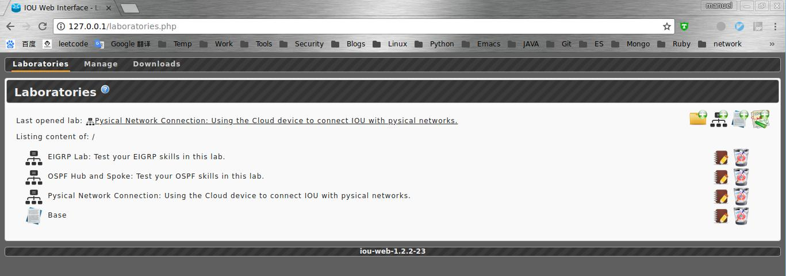

使用Docker自动部署Cisco IOU实验环境
准备ccie lab的过程中难免用到Cisco IOU环境，这里提供一个自己使用的docker 环境，方便实验环境迁移部署。
web-iou 作者项目地址
iou镜像下载 这里可以找到
dockerfile自动部署可以到 github仓库去查询，有详细的使用说明记录

dockerfile内容 如下
# Author: manue1
# Date: 2018-04-10
# https://github.com/Nanue1/web-iou-docker.git
FROM ubuntu:14.04
LABEL Description="deploy web iou with docker"
#1.iou deb install
COPY web-iou/iou-web_1.2.2-23_all.deb /
WORKDIR /
RUN apt-get update -y && \
apt-get install -y gdebi && \
yes|gdebi /iou-web_1.2.2-23_all.deb
#2. apache
RUN rm /etc/apache2/sites-enabled/000-default.conf && \
mv /etc/apache2/sites-enabled/001-iou /etc/apache2/sites-enabled/001-iou.conf && \
apt-get install -y php5-cgi && \
ln -s /etc/apache2/conf-available/php5-cgi.conf /etc/apache2/conf-enabled/php5-cgi.conf &&\
ln -s /etc/apache2/mods-available/cgi.load /etc/apache2/mods-enabled/cgi.load && \
sed -i 's/-FollowSymLinks/FollowSymLinks/g' /etc/apache2/sites-enabled/001-iou.conf && \
sed -i '156s/denied/granted/g' /etc/apache2/apache2.conf && \
service apache2 restart
#3. env
RUN apt-get install -y \
lib32z1 \
lib32ncurses5 \
lib32bz2-1.0 \
ibssl1.0.0 \
libtinfo5 && \
ln -s /lib/i386-linux-gnu/libcrypto.so.1.0.0 /usr/lib/libcrypto.so.4
EXPOSE 80
ENTRYPOINT ["/usr/sbin/apache2ctl", "-D", "FOREGROUND"]